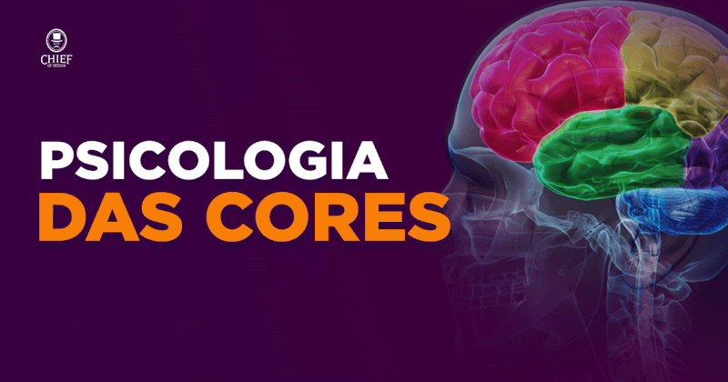
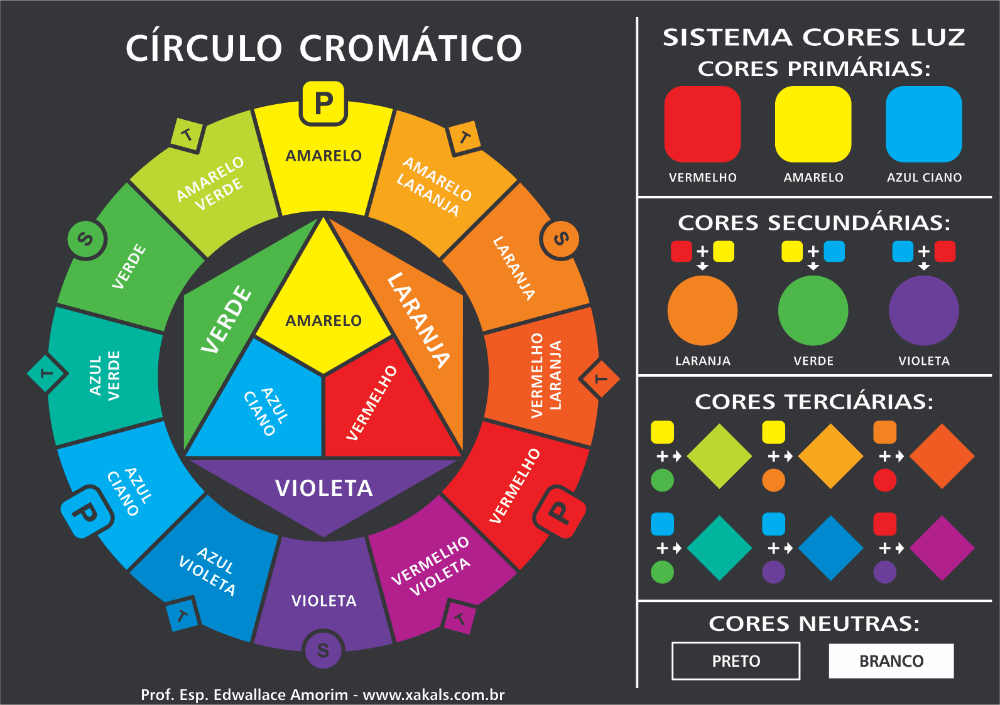
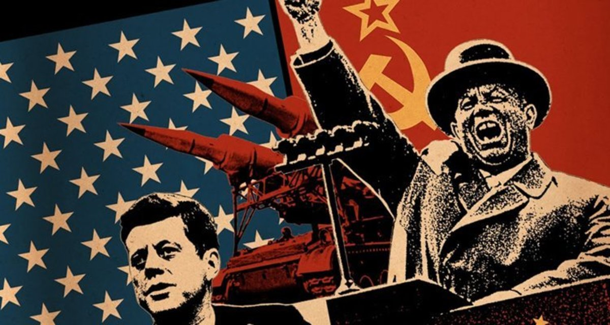

Artigos
Veja abaixo alguns artigos que utilizei para praticar formatação de texto, inserção de imagens e vídeos.
Psicologia das cores

Combinações de Cores
A História da Internet
Como funciona a Internet
Tipografia

Projeto para prática da HTML das CSS
Veja abaixo alguns artigos que utilizei para praticar formatação de texto, inserção de imagens e vídeos.